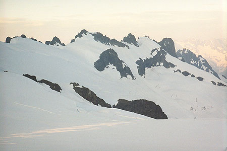
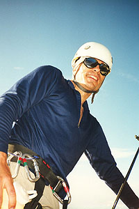
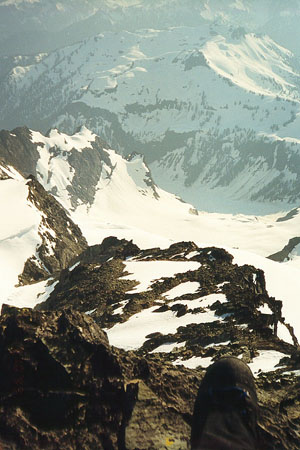
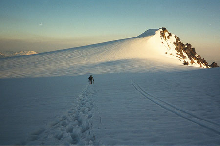
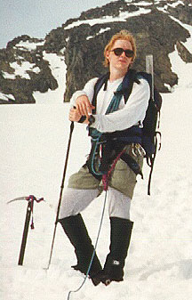
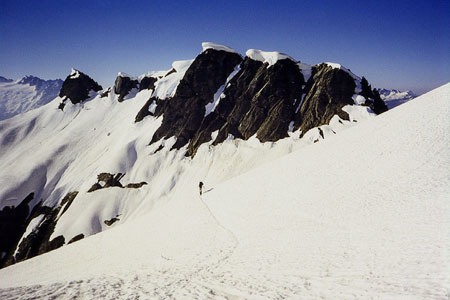
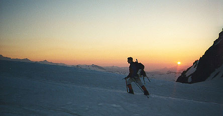

Mount Shuksan Sulphide Glacier
- Sulphide Glacier, oh, also The Tooth
- July 10-11, 1999
Steve and I set ourselves a blistering pace this weekend, and actually came through without being complete physical wrecks on Monday! Interestingly, it was going to be a laid-back trip: climb beautiful Mt. Shuksan by hiking in Saturday to a camp at 6500 feet, then finish the climb Sunday, and come home pretty early. I talked to Kris about our plans, and she said “That’s not hard enough for you…you need more challenge.” I balked of course, but she must have planted a seed.







After the usual denials, frustrations and full quotas at the ranger station, we continued merrily on, parking at 2500 feet at the end of a dirt road north of Baker Lake. We traveled light, but with food, fuel and sleeping systems to get us through a night on the glacier. My new 8.5 mm rope with a big improvement over the old heavy 10.5 mm one (2 mm makes a bigger difference in weight than you’d think!).
We didn’t feel hurried, but we made good time anyway. I talked a lot about Yosemite, trying to get Steve psyched to repeat the Royal Arches with me (I still can’t believe Jeff and I did 16 pitches and many rappels, had a minor disaster and were still back at the car by 4 pm!). We were sweating like crazy in the humid, still air of the valley. Even the snow didn’t help, until we got into old timber and ascended a long ridge.
Walking in a forest with 6 feet of old snow on the ground is fun. The hard snow with nice “cups” for steps. The walking is made easier by bits of old moss and needles that provide friction. Cool and quiet. Steve talked about a recent hike with Sarah in a forest like this, and I thought back to a cross country descent from Kendall Peak slipping and sliding pleasantly down this kind of snow forest.
We left the trees behind as we toiled up a steep snow slope. At the top, a man sat alone, seemingly hoping for a party to invite him to rope up with for the glacier. He said he’d be at the camp, so we decided to ask him then if he wanted to come with us.
I had to get something from deep in my pack so Steve continued up around a rock band, and I followed later. This time of total solitude was novel and fun. I babbled to some east Europeans along the way about telemark ski bindings, and their oblique responses indicated that we completely didn’t understand each other! When I saw Steve again, we were at the 6500 foot glacier camp, with a great view of an icefall on the Sulphide Glacier, and the summit pyramid, which looked very close.
It was only two o’clock, and we immediately started making water from the snow. As I tended the stove, we grew restless and started to think about going for the summit now.
In the car we had talked about wanting to climb the Tooth, an alpine day climb far away at Snoqualmie Pass. Sadly, we didn’t really have a weekend to reserve for it, so we didn’t know when we could do it. One of us got the bright idea to climb Shuksan, speed down to the car tonight (in the dark) or tomorrow morning, drive for hours, then hike into and climb the Tooth Sunday.
A most unholy plan.
Most devious.
Tempting?
OK LET’S DO IT!
The fact that we had already climbed 4000 feet today didn’t deter us from another 2500, so we drank a lot of water and Gatorade, scurrying up the glacier under the afternoon sun.
A party coming down warned us of a difficult climb on the final 900 feet of summit pyramid. We asked how they did the climb and one of them said “I don’t know you, but I don’t hate you, so don’t go the way we went!” From our view, the left skyline looked best, and this impression had been backed up by a yeoman of the glacier camp.
We unroped at the base of a small waterfall, and stepped from glacial ice to crumbly rock. The climbing was harder than it looked, and boulders hung precariously to the slope, requiring exaggerated care to move around without disturbing their fitful sleep. Already, we had come up something we didn’t want to try descending, and things got worse from there. Even as the view of the glacier and our tiny tracks below became more expansive, we cast worried glances at the rocks higher up.
Slowly, slowly we moved upward, with many zigs and zags. The sun was getting low. We peaked around the north side of the pyramid to a fantastical array of craggy summits made even more unreal by our precarious position.
Finally, Steve stood cautiously on a level block and I peered over the rim. Only a quick glance at the steep wall rearing overhead convinced us both immediately that we were through. “We’re going back, this is it for us.”
With this one certain thought against a mountain of uncertainty, we began picking our way slowly down. Steve took the lead, and I generally followed the trail he blazed with considerable mental effort. Sometimes, with a foot dangling in space, I asked where he put his foot, and a quick word of advice led me to a secure stance.
We didn’t want to descend the first part by the waterfall, so we found an easier way around. This led to steep snow, and then an easy crevasse crossing. much better than the loose puzzle of boulders that lay behind us. Once safely on the glacier we breathed a heavy sigh of relief, and moved quickly back to camp in the evening light. As we later consoled ourselves, we attempted a new route, and it just “didn’t go,” no wounded pride there!
Too exhausted to eat much, we melted snow and watched the sun set as a dull orange orb to the north of Mt. Baker. From our high perch by the stove, we watched the purple shadows creep up this mountain, pretty entranced by it’s majesty. Into the bivy sacks and a good nights sleep.
There were many at this high camp, and by 4 am most of them had left for the summit. When we had packed up, we saw them high on the pyramid, making their way up steep snow on the easy route. At least now we know the way! It didn’t seem worthwhile to go back up, so we descended 4000 feet in two hours, skiing and running down the first 2000 feet in mere minutes. Steve’s ears had to be pressurized several times!
We predicted 2 hours, and it took us 1 hour and 59 minutes. Getting good!
The Tooth
Into the car, zooming to my place, where I can’t wait to see Kris and surprise her with a Sunday morning visit. A happy hug and reunion for me, but brief. Gathering the rock climbing gear, we continue south to Snoqualmie Pass, and park among the throngs of day hikers. It was 2:15, and we had 3 miles and 2500 feet to climb. This would put us at the base of the real climb.
At least for the day, we had become one of that grim set: the mountain climbers with dour expressions who churn past the tourists; reaching higher and higher with clanking, mysterious gear. There was no time to talk, we were motivated by the need to get off the climb before darkness, and though the sun was bright and shining now, there were many hours and much uncertainty between us and the safety of home. The heat and sweat killed our appetite, but we tended our thirst like a powerful lion on a rusty chain. We drank from a hole in the snow on a slope above the crowds, continuing into a hidden basin surrounded by craggy ridges and populated by isolated boulders. In fact, this basin was like the palate of a mouth, with the Tooth acting as a right side molar.
Bacteria before us had blazed a trail into a gap and we followed on the steep snow of the palate. Encircling a rotted stump, we then climbed rock to the base of the route, just behind another party who probably thought they were the last climbers for the day. It was around 5:00. With no time to lose, we geared up, and I took the first pitch.
Incredibly fun climbing followed, easy with the right sequences. Good stances to place gear, and soon I brought Steve up to a wedged boulder and took off again. We would have swapped leads, but Steve didn’t have rock shoes. In his clunky mountain boots, he had some interesting times following with brute strength where I had nimbly tiptoed. Steve enjoyed it though. He led the easier 3rd pitch, thinking he was off route, but ending up at the perfect spot. From there, one fun pitch traversed left and up, and soon, we stood on the summit.
This was a fun moment, and our customary summit handshake had special significance for the efforts of the last two days. Wanting very badly to linger, we had to say no, and begin the rappels to the base. There were only four, and I was changing back into my wet mountain boots by 8:30.
Going down was exciting - the snow of the palate had hardened, and I lost control twice on “controlled slides,” getting some good self-arrest practice in. Got to be more careful. Later, a long sitting glissade for me, and an expert standing glissade by Steve brought us to now-deserted Source Lake. The icebergs and turquoise water begged me to bide a while. Steve knew best however, and set us a brilliant pace, just tolerable for the distance, not even willing to stop to turn on a headlamp as we crashed across streams and over logs. I found myself laughing when several obstacles were clumsily averted by stomping through the trickles and inky mud of the heavily used trail. Didn’t slow me down though!
Racing and hopping, Steve never used his headlamp, but I gave up just yards from the car. “This is ridiculous!”
At 10:15 pm, we sat like zombies. Finally, I started the car.
Don’t ask us if we enjoyed it for a while. Have some mercy!